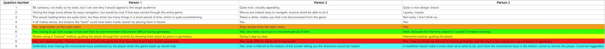
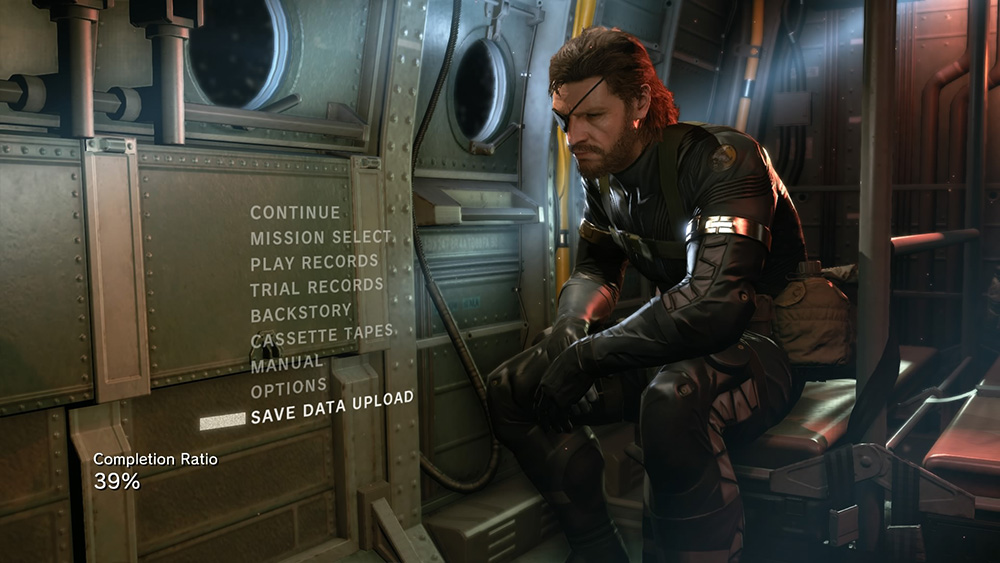
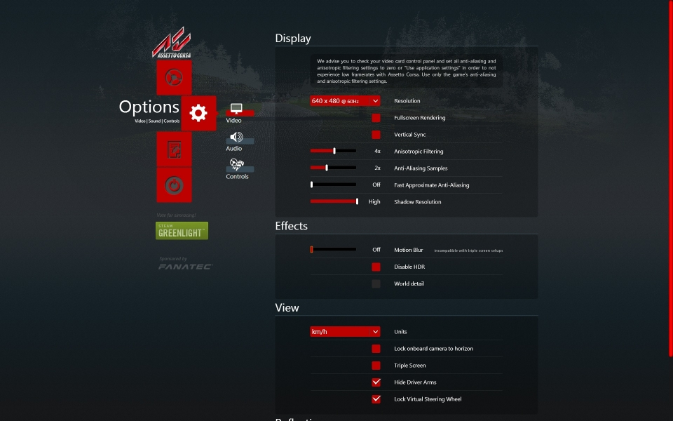

Kick Your Astronaut User Interface Evaluation Task
By Jack Maber
Methods
I started my research by constructing a set of interview questions about the game's interface, as I felt that this would be the best way of gaining insight into the pre-existing problems with the interface, and although the results I gained did give me a few points to work with, I wish I had made my questions more general as I think it would be easier to make connections between the findings of my later research methods, as although qualitative allows me to gain a better understanding of what my audience is thinking during gameplay, it is hard to draw more general conclusions, which would have been helpful when constructing my Questionnaire. My sample size for this piece of research was 3 people, as I felt that was the minimum amount of people that would be required to start to find problems within the timeframe of the assignment, and also leave me with enough time to complete my other research.
My Quantitative research was made up of more focused questions about the user interface, specifically about the tutorial, which was an issue I found that all of the people who took my questionnaire brought up, so I felt it would be best to research more into this specifically as it is a very important piece of user interface when playing a new game, as otherwise the player won't know what to do. I asked 20 people about the interface as this I was told was the optimum number of people to ask, and as these anwsers were more tailoured, it gave me much more focused results, which is exactly what I need to draw effective conclusions, however I made the mistake of using multiple choice anwsers rather than a 1 - 5 scale, which made it harder to turn into graphs and see correlations, but it can still be done, I would absolutely use a 1-5 scale next time as it would allow me to create scatter graphs and better understand where correlations lie.
My last evaluation method was Task Evaluation, where I asked a person to undertake a certain task, and then asked them to talk out loud the process they were undertaking, I then wrote down exactly what they said this gave me much more insight into the actual process that the player would undertake during gameplay, this gave me some very interesting results about the smaller details that can crop up, such as "false flags" with the UI that look like options but are actually just text, which seemed to annoy all of the players, which is insight I would never have gained without using this method, so it was defiently a good choice, but I think I could have asked them to undertake more tasks, as this would have uncovered more issues with the UI, but due to time constraints I was unable to, utilising video or screen capture for this piece of research would also have been optimal, however I found that the player base I was using didn't want to partake in filming, which affects the validity of my results, but they still hold some useful merit when it comes to drawing conclusions, however I would defienetly consider using video next time as it defiently helps when pointing out problems with the UI as the viewer can actually see the player using the interface.
Results
To make it easier to see the trends in my Qualitative research, I have "Coded" my results, as can be seen in the second image, where I have highlighted results that are repeated, meaning there is a definite trend present in my results, which makes it much easier to see where problems with the UI are present.
Due to the fact that I had undetaken my questionnaire using multiple choice answers instead of using a 1-5 scale, it is hard to for me to create scatter graphs (As noted earlier), however it is still possible for me to create reliable inferences from comparing the charts I can create, with the charts I have put here being the ones I can feel I can infer the most out of.
My last piece of Research was my Task Analysis, where I asked the players to undertake tasks, and I then wrote down what they said as they spoke out loud, the process they were undertaking. I have analysed in much the same wasy as I did with my interviews, by "coding" the anwsers I recieved, I can see where the correlations lie are, and with this set of results it was pretty clear cut.

Discussion
To start off my research for this assignment, I felt it would be best to carry out to preliminary analysis of the interface I had chosen by utilising a Qualitative method as this would give me a chance to construct a series of questions tailoured specifically to my chosen UI, and allow my participants to speak their mind about the issues and point out exactly what causes the issues to arise and bring about confusion. As to my actual results, as can be seen in the first image in the results tab, I asked a broad number of questions about both of the major UI systems in the game, the main menu and the tutorial, as well as a question about the use of UI in gameplay. The main UI for this game utilises a very common layout of using large boxes containing text or just text, that tells the user that buttons' function, this system is utilised by many AAA games for ease of use and clean look, games such as MGS5: The Phantom Pain utilise this system very well.  While games such as Assetto Corsa for example, which is a racing simulator with a huge amount of customisation and settings for the player to choose from and manipulate have a very segregated menu system, with a lot of sub-menus , however, this is due to the games inherit size, level of simulation and breadth of features that it has, in comparison to the relatively cinematic experience that is Metal Gear, and as Kick Your Astronaut is a relatively small game made by a small team, a large and confusing interface would be a waste of time and would cause unnessisary confusion, which is backed up by my research findings, every player said that the main menu was easy to use and "Having the large icons allows for easy navigation", however one one of the players did bring up an interesting point, saying that the navigation buttons like "back could have been made clearer by placing them in boxes", as it's all well and good having the Main UI be nice and clear, but if users find it hard to find the other navigation controls, this can negatively affect the User Experience as it can cause confusion and anger; this issue is also present in the "match lobby" as I found in my Task Analysis results, a lot of the smaller UI elements such as the "JOIN" button on the lobby screen don't actually function at all, a lot of the interaction is reliant on the user pressing keyboard keys, which is very unclear, as the text to state that a button needs to be pressed is below the large "join button", which is very misleading and a poor UI design choice as nearly every tester that undertook my Task analysis stated that they clicked the "JOIN" button before they read the text below, with one even exclaiming "but that doesn't actually work, why doesn't that work, that's dumb", which accurately describes the amount of confusion that players can experience when UI elements are not tested prior to implementation, thus leading to a bad User Experience. To help with this issue, I would propose to make the "JOIN" button functional as it isthe first thing that players are drawn to, and try to click, which is why it would make the most logical sense to make functional as it would cut down of the amount of frustration that the user experiences.
My Questionnaire also brought up issues relating to the Tutorial, as I thought it would be important to ask questions about it because it is one of the most important pieces of UI that the player can interact with in a video game, and my results bring back the conclusion that the tutorial in this game is very confusing, and is presented in a way that is hard to remember for players, which can be seen in the "coded" example above, where all 3 people agreed that it was confusing, and made it hard to recall the controls and objectives once they had started playing, with one of them stating that "some don't even work!", which is referring to the controls posed to the player during the tutorial, which I found out is true, so as this piece of UI has most issues, I chose to tailor my next piece of research around this as to gain better insight as to the issues it has. My Quantitative consisted of a 10 question questionnaire that I gave to 20 people to fill out, with questions directly related to the tutorial section of the UI, I then selected the 5 most interesting anwsers to display here as they are the best to visualise the data I recieved. I based the questions on the ones I asked in the Questionnaire but I nailed down the specifics to see where the issues lie with the Tutorial UI and how it affects the UX, with the first being "How easily could you remember all of the information that the Tutorial provided?", which I hoped would give me a better idea of just how much information the test base was actually retaining from the tutorial, which as it turned out was little to none, with only one person claiming that they only forgot a little, which I personally find hard to believe, but as this was one result, it might have been a misclick. But this result is easily linked with my other result for "Even though you played the tutorial, did you still find it hard to recall the controls during gameplay?", which further backs up my argument that the existing tutorial is poorly laid out for quickly grasping controls, as over 3/4 of testers stated that they found it hard to recall any of the controls, which was also stated in the interview by the first participant, stating it was "mostly guesswork"
Following on from my Qualitative research, my questionnaire further developed on the problems that I had found with the interface in my first round of research, I asked the players again if there would be a better method of posing the tutorial to the player, and the most popular was a "guided" walkthrough, with the "lock-out" method closely behind, but I feel that both of these methods would be of greater use than the one featured in the game, as almost all of the players still struggled to remember any of the controls during gameplay, to find out exactly what the player was thinking when using the interface, I next decided to undertake some task analysis to better understand the way players expect the UI to work in the game
My task analysis was useful in finding smaller issues with the UI, such as the fact that the "join" button in the player select screen doesn't actually do anything, which players found very odd, and very annoying as they then had to then look around the screen for the correct key to press to join the game, while some players just expected it to be space, as that was the "logical" button apparently, but it ended up being enter, which in my mind doesn't make all that much sense"
Conclusion
Vitae natoque dictum etiam semper magnis enim feugiat convallis convallis egestas rhoncus ridiculus in quis risus amet curabitur tempor orci penatibus. Tellus erat mauris ipsum fermentum etiam vivamus eget. Nunc nibh morbi quis fusce hendrerit lacus ridiculus.